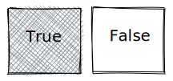
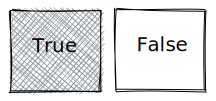
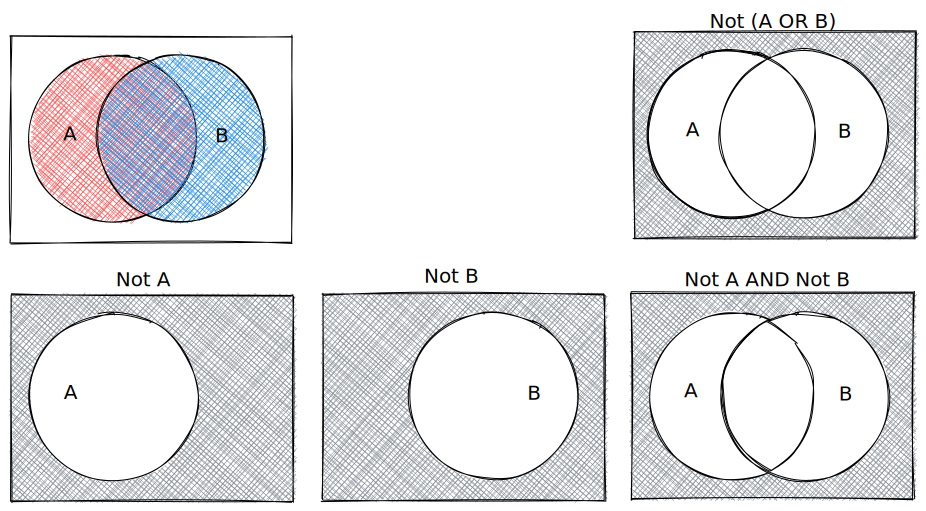
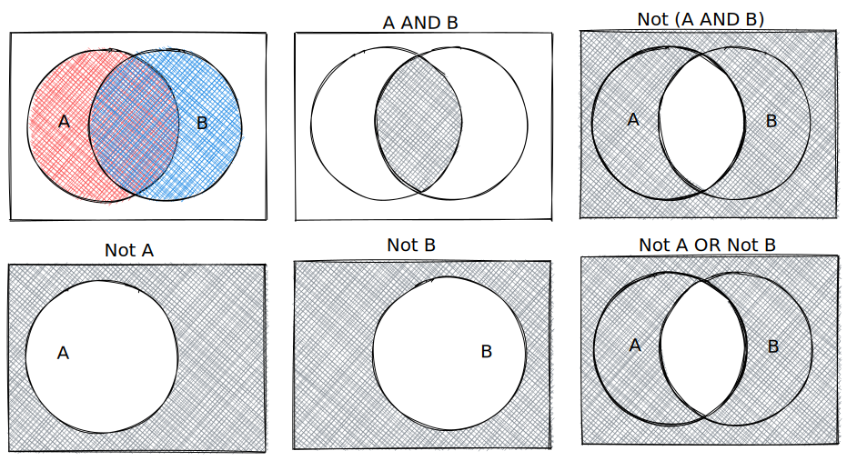
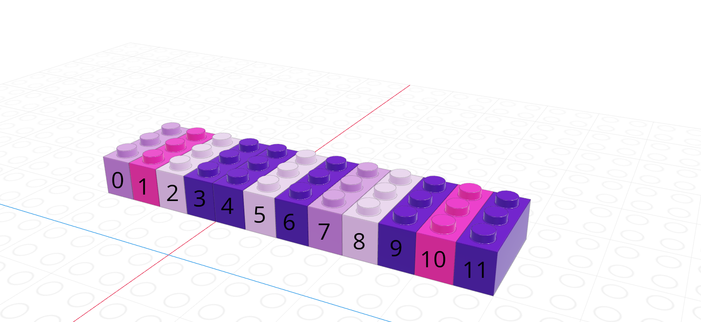
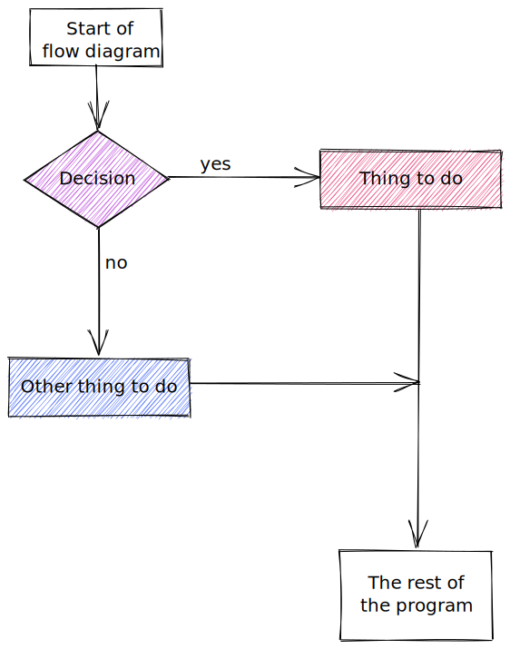
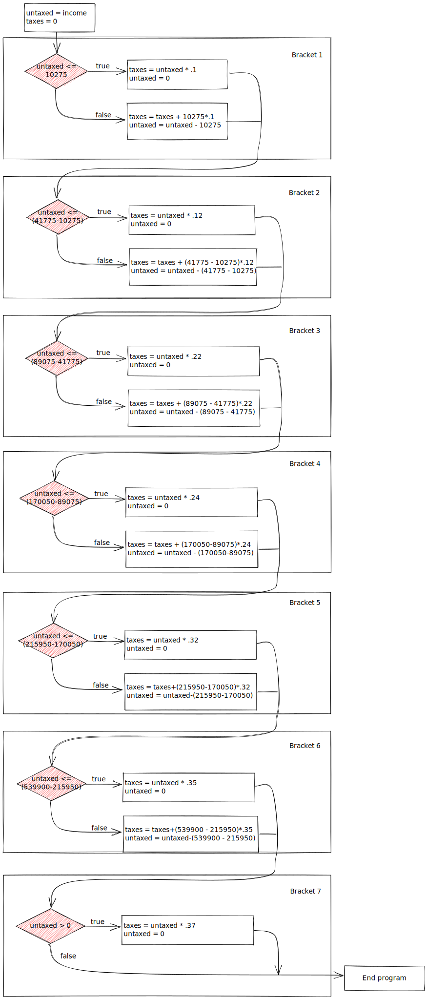

x <- c(TRUE, FALSE, TRUE, FALSE)
y <- c(TRUE, TRUE, FALSE, FALSE)
x & y[1] TRUE FALSE FALSE FALSEx | y[1] TRUE TRUE TRUE FALSE!x & y[1] FALSE TRUE FALSE FALSEx & !y[1] FALSE FALSE TRUE FALSEThis chapter introduces some of the most important tools for working with data: vectors, matrices, loops, and if statements. It would be nice to gradually introduce each one of these topics separately, but they tend to go together, especially when you’re talking about programming in the context of data processing.
Before we start talking about data structures and control structures, though, we’re going to take a minute to review some concepts from mathematical logic. This will be useful for both data structures and control structures, so stick with me for a few minutes.
We can combine logical statements using and, or, and not.
! to symbolize NOT, in Python, we use ~ for vector-wise negation (NOT).x <- c(TRUE, FALSE, TRUE, FALSE)
y <- c(TRUE, TRUE, FALSE, FALSE)
x & y[1] TRUE FALSE FALSE FALSEx | y[1] TRUE TRUE TRUE FALSE!x & y[1] FALSE TRUE FALSE FALSEx & !y[1] FALSE FALSE TRUE FALSEimport numpy as np
x = np.array([True, False, True, False])
y = np.array([True, True, False, False])
x & yarray([ True, False, False, False])x | yarray([ True, True, True, False])~x & yarray([False, True, False, False])x & ~yarray([False, False, True, False])De Morgan’s Laws are a set of rules for how to combine logical statements. You can represent them in a number of ways:
We can also represent them with Venn Diagrams.
 Suppose that we set the convention that .
Suppose that we set the convention that .
We can then illustrate DeMorgan’s first law as follows:

And similarly, DeMorgan’s second law:

In the previous chapter, we discussed 4 different data types: strings/characters, numeric/double/floats, integers, and logical/booleans. As you might imagine, things are about to get more complicated.
Data structures are more complicated arrangements of information.
| Homogeneous | Heterogeneous | |
|---|---|---|
| 1D | vector | list |
| 2D | matrix | data frame |
| N-D | array |
A vector is a one-dimensional column of homogeneous data. Homogeneous means that every element in a vector has the same data type.
We can have vectors of any data type and length we want1: 
Each element in a vector has an index - an integer telling you what the item’s position within the vector is. I’m going to demonstrate indices with the string vector
| R | Python |
|---|---|
| 1-indexed language | 0-indexed language |
| Count elements as 1, 2, 3, 4, …, N | Count elements as 0, 1, 2, 3, , …, N-1 |
|  |
In R, we create vectors with the c() function, which stands for “concatenate” - basically, we stick a bunch of objects into a row.
digits_pi <- c(3, 1, 4, 1, 5, 9, 2, 6, 5, 3, 5)
# Access individual entries
digits_pi[1][1] 3digits_pi[2][1] 1digits_pi[3][1] 4# R is 1-indexed - a list of 11 things goes from 1 to 11
digits_pi[0]numeric(0)digits_pi[11][1] 5# Print out the vector
digits_pi [1] 3 1 4 1 5 9 2 6 5 3 5In python, we create vectors using the array function in the numpy module. To add a python module, we use the syntax import <name> as <nickname>. Many modules have conventional (and very short) nicknames - for numpy, we will use np as the nickname. Any functions we reference in the numpy module will then be called using np.fun_name() so that python knows where to find them.2
import numpy as np
digits_list = [3,1,4,1,5,9,2,6,5,3,5]
digits_pi = np.array(digits_list)
# Access individual entries
digits_pi[0]3digits_pi[1]1digits_pi[2]
# Python is 0 indexed - a list of 11 things goes from 0 to 104digits_pi[0]3digits_pi[11]
# Print out the vectorError in py_call_impl(callable, dots$args, dots$keywords): IndexError: index 11 is out of bounds for axis 0 with size 11
Detailed traceback:
File "<string>", line 1, in <module>print(digits_pi)[3 1 4 1 5 9 2 6 5 3 5]We can pull out items in a vector by indexing, but we can also replace specific things as well:
favorite_cats <- c("Grumpy", "Garfield", "Jorts", "Jean")
favorite_cats[1] "Grumpy" "Garfield" "Jorts" "Jean" favorite_cats[2] <- "Nyan Cat"
favorite_cats[1] "Grumpy" "Nyan Cat" "Jorts" "Jean" If you’re curious about any of these cats, see the footnotes3.
As you might imagine, we can create vectors of all sorts of different data types. One particularly useful trick is to create a logical vector that goes along with a vector of another type to use as a logical index.

If we let the black lego represent “True” and the grey lego represent “False”, we can use the logical vector to pull out all values in the main vector.
| Black = True, Grey = False | Grey = True, Black = False |
|---|---|
 |
 |
Note that for logical indexing to work properly, the logical index must be the same length as the vector we’re indexing. This constraint will return when we talk about data frames, but for now just keep in mind that logical indexing doesn’t make sense when this constraint isn’t true.
# Define a character vector
weekdays <- c("Sunday", "Monday", "Tuesday", "Wednesday", "Thursday", "Friday", "Saturday")
weekend <- c("Sunday", "Saturday")
# Create logical vectors
relax_days <- c(1, 0, 0, 0, 0, 0, 1) # doing this the manual way
relax_days <- weekdays %in% weekend # This creates a logical vector
# with less manual construction
relax_days[1] TRUE FALSE FALSE FALSE FALSE FALSE TRUEschool_days <- !relax_days # FALSE if weekend, TRUE if not
school_days[1] FALSE TRUE TRUE TRUE TRUE TRUE FALSE# Using logical vectors to index the character vector
weekdays[school_days] # print out all school days[1] "Monday" "Tuesday" "Wednesday" "Thursday" "Friday" import numpy as np;
animals = np.array(["Cat", "Dog", "Snake", "Lizard", "Tarantula", "Hamster", "Gerbil", "Otter"])
# Define a logical vector
good_pets = np.array([True, True, False, False, False, True, True, False])
bad_pets = np.invert(good_pets) # Invert the logical vector
# so True -> False and False -> True
animals[good_pets]array(['Cat', 'Dog', 'Hamster', 'Gerbil'], dtype='<U9')animals[bad_pets]array(['Snake', 'Lizard', 'Tarantula', 'Otter'], dtype='<U9')animals[~good_pets] # equivalent to using bad_petsarray(['Snake', 'Lizard', 'Tarantula', 'Otter'], dtype='<U9')As vectors are a collection of things of a single type, what happens if we try to make a vector with differently-typed things?
c(2L, FALSE, 3.1415, "animal") # all converted to strings[1] "2" "FALSE" "3.1415" "animal"c(2L, FALSE, 3.1415) # converted to numerics[1] 2.0000 0.0000 3.1415c(2L, FALSE) # converted to integers[1] 2 0import numpy as np
np.array([2, False, 3.1415, "animal"]) # all converted to stringsarray(['2', 'False', '3.1415', 'animal'], dtype='<U32')np.array([2, False, 3.1415]) # converted to numericsarray([2. , 0. , 3.1415])np.array([2, False]) # converted to integersarray([2, 0])As a reminder, this is an example of implicit type conversion - R and python decide what type to use for you, going with the type that doesn’t lose data but takes up as little space as possible.
A matrix is the next step after a vector - it’s a set of values arranged in a two-dimensional, rectangular format.

# Minimal matrix in R: take a vector,
# tell R how many rows you want
matrix(1:12, nrow = 3) [,1] [,2] [,3] [,4]
[1,] 1 4 7 10
[2,] 2 5 8 11
[3,] 3 6 9 12matrix(1:12, ncol = 3) # or columns [,1] [,2] [,3]
[1,] 1 5 9
[2,] 2 6 10
[3,] 3 7 11
[4,] 4 8 12# by default, R will fill in column-by-column
# the byrow parameter tells R to go row-by-row
matrix(1:12, nrow = 3, byrow = T) [,1] [,2] [,3] [,4]
[1,] 1 2 3 4
[2,] 5 6 7 8
[3,] 9 10 11 12# We can also easily create square matrices
# with a specific diagonal (this is useful for modeling)
diag(rep(1, times = 4)) [,1] [,2] [,3] [,4]
[1,] 1 0 0 0
[2,] 0 1 0 0
[3,] 0 0 1 0
[4,] 0 0 0 1In python, matrices are just a special case of a class called ndarray - n-dimensional arrays.
import numpy as np
# Minimal ndarray in python by typing in the values in a structured format
np.array([[0, 1, 2],
[3, 4, 5],
[6, 7, 8],
[9, 10, 11]])
# This syntax creates a list of the rows we want in our matrix
# Matrix in python using a data vector and size parametersarray([[ 0, 1, 2],
[ 3, 4, 5],
[ 6, 7, 8],
[ 9, 10, 11]])np.reshape(range(0,12), (3,4))array([[ 0, 1, 2, 3],
[ 4, 5, 6, 7],
[ 8, 9, 10, 11]])np.reshape(range(0,12), (4,3))array([[ 0, 1, 2],
[ 3, 4, 5],
[ 6, 7, 8],
[ 9, 10, 11]])np.reshape(range(0,12), (3,4), order = 'F')array([[ 0, 3, 6, 9],
[ 1, 4, 7, 10],
[ 2, 5, 8, 11]])In python, we create 2-dimensional arrays (aka matrices) either by creating a list of rows to join together or by reshaping a 1-dimensional array. The trick with reshaping the 1-dimensional array is the order argument: ‘F’ stands for “Fortran-like” and ‘C’ stands for “C-like”… so to go by column, you use ‘F’ and to go by row, you use ‘C’. Totally intuitive, right?
This class comes before linear algebra in the required course sequence, so most of the problems we’re going to work on will not require much in the way of matrix or array operations. For now, you need the following:
Both R and python use [row, column] to index matrices. To extract the bottom-left element of a 3x4 matrix in R, we would use [3,1] to get to the third row and first column entry; in python, we would use [2,0] (remember that Python is 0-indexed).
my_mat <- matrix(1:12, nrow = 3, byrow = T)
my_mat[3,1] <- 500
my_mat [,1] [,2] [,3] [,4]
[1,] 1 2 3 4
[2,] 5 6 7 8
[3,] 500 10 11 12Remember that zero-indexing!
import numpy as np
my_mat = np.reshape(range(1, 13), (3,4))
my_mat[2,0] = 500
my_matarray([[ 1, 2, 3, 4],
[ 5, 6, 7, 8],
[500, 10, 11, 12]])There are a number of matrix operations that we need to know for basic programming purposes:
x <- matrix(c(1, 2, 3, 4), nrow = 2, byrow = T)
y <- matrix(c(5, 6), nrow = 2)
# Scalar multiplication
x * 3 [,1] [,2]
[1,] 3 6
[2,] 9 123 * x [,1] [,2]
[1,] 3 6
[2,] 9 12# Transpose
t(x) [,1] [,2]
[1,] 1 3
[2,] 2 4t(y) [,1] [,2]
[1,] 5 6# matrix multiplication (dot product)
x %*% y [,1]
[1,] 17
[2,] 39import numpy as np
x = np.array([[1,2],[3,4]])
y = np.array([[5],[6]])
# scalar multiplication
x*3array([[ 3, 6],
[ 9, 12]])3*x
# transposearray([[ 3, 6],
[ 9, 12]])x.T # shorthandarray([[1, 3],
[2, 4]])x.transpose() # Long form
# Matrix multiplication (dot product)array([[1, 3],
[2, 4]])np.dot(x, y)array([[17],
[39]])Arrays are a generalized n-dimensional version of a vector: all elements have the same type, and they are indexed using square brackets in both R and python: [dim1, dim2, dim3, ...]
array(1:8, dim = c(2,2,2)), , 1
[,1] [,2]
[1,] 1 3
[2,] 2 4
, , 2
[,1] [,2]
[1,] 5 7
[2,] 6 8Note that displaying this requires 2 slices, since it’s hard to display 3D information in a 2D terminal arrangement.
import numpy as np
np.array([[[1,2],[3,4]],[[5,6], [7,8]]])array([[[1, 2],
[3, 4]],
[[5, 6],
[7, 8]]])Control structures are statements in a program that determine when code is evaluated (and how many times it might be evaluated). There are two main types of control structures: if-statements and loops.
Before we start on the types of control structures, let’s get in the right mindset. We’re all used to “if-then” logic, and use it in everyday conversation, but computers require another level of specificity when you’re trying to provide instructions.
Check out this video of the classic “make a peanut butter sandwich instructions challenge”:
Here’s another example:

The key takeaways from these bits of media are that you should read this section with a focus on exact precision - state exactly what you mean, and the computer will do what you say. If you instead expect the computer to get what you mean, you’re going to have a bad time.
Conditional statements determine if code is evaluated.
They look like this:
if (condition)
then
(thing to do)
else
(other thing to do)The else (other thing to do) part may be omitted.
When this statement is read by the computer, the computer checks to see if condition is true or false. If the condition is true, then (thing to do) is also run. If the condition is false, then (other thing to do) is run instead.
Let’s try this out:
x <- 3
y <- 1
if (x > 2) {
y <- 8
} else {
y <- 4
}
print(paste("x =", x, "; y =", y))[1] "x = 3 ; y = 8"In R, the logical condition after if must be in parentheses. It is common to then enclose the statement to be run if the condition is true in {} so that it is clear what code matches the if statement. You can technically put the condition on the line after the if (x > 2) line, and everything will still work, but then it gets hard to figure out what to do with the else statement - it technically would also go on the same line, and that gets hard to read.
x <- 3
y <- 1
if (x > 2) y <- 8 else y <- 4
print(paste("x =", x, "; y =", y))[1] "x = 3 ; y = 8"So while the 2nd version of the code technically works, the first version with the brackets is much easier to read and understand. Please try to emulate the first version!
x = 3
y = 1
if x > 2:
y = 8
else:
y = 4
print("x =", x, "; y =", y)x = 3 ; y = 8In python, all code grouping is accomplished with spaces instead of with brackets. So in python, we write our if statement as if x > 2: with the colon indicating that what follows is the code to evaluate. The next line is indented with 2 spaces to show that the code on those lines belongs to that if statement. Then, we use the else: statement to provide an alternative set of code to run if the logical condition in the if statement is false. Again, we indent the code under the else statement to show where it “belongs”.
Python will throw errors if you mess up the spacing. This is one thing that is very annoying about Python… but it’s a consequence of trying to make the code more readable.
The US Tax code has brackets, such that the first $10,275 of your income is taxed at 10%, anything between $10,275 and $41,775 is taxed at 12%, and so on.
Here is the table of tax brackets for single filers in 2022:
| rate | Income |
|---|---|
| 10% | $0 to $10,275 |
| 12% | $10,275 to $41,775 |
| 22% | $41,775 to $89,075 |
| 24% | $89,075 to $170,050 |
| 32% | $170,050 to $215,950 |
| 35% | $215,950 to $539,900 |
| 37% | $539,900 or more |
Note: For the purposes of this problem, we’re ignoring the personal exemption and the standard deduction, so we’re already simplifying the tax code.
Write a set of if statements that assess someone’s income and determine what their overall tax rate is.
Hint: You may want to keep track of how much of the income has already been taxed in a variable and what the total tax accumulation is in another variable.
# Start with total income
income <- 200000
# x will hold income that hasn't been taxed yet
x <- income
# y will hold taxes paid
y <- 0
if (x <= 10275) {
y <- x*.1 # tax paid
x <- 0 # All money has been taxed
} else {
y <- y + 10275 * .1
x <- x - 10275 # Money remaining that hasn't been taxed
}
if (x <= (41775 - 10275)) {
y <- y + x * .12
x <- 0
} else {
y <- y + (41775 - 10275) * .12
x <- x - (41775 - 10275)
}
if (x <= (89075 - 41775)) {
y <- y + x * .22
x <- 0
} else {
y <- y + (89075 - 41775) * .22
x <- x - (89075 - 41775)
}
if (x <= (170050 - 89075)) {
y <- y + x * .24
x <- 0
} else {
y <- y + (170050 - 89075) * .24
x <- x - (170050 - 89075)
}
if (x <= (215950 - 170050)) {
y <- y + x * .32
x <- 0
} else {
y <- y + (215950 - 170050) * .32
x <- x - (215950 - 170050)
}
if (x <= (539900 - 215950)) {
y <- y + x * .35
x <- 0
} else {
y <- y + (539900 - 215950) * .35
x <- x - (539900 - 215950)
}
if (x > 0) {
y <- y + x * .37
}
print(paste("Total Tax Rate on $", income, " in income = ", round(y/income, 4)*100, "%"))[1] "Total Tax Rate on $ 2e+05 in income = 22.12 %"# Start with total income
income = 200000
# untaxed will hold income that hasn't been taxed yet
untaxed = income
# taxed will hold taxes paid
taxes = 0
if untaxed <= 10275:
taxes = untaxed*.1 # tax paid
untaxed = 0 # All money has been taxed
else:
taxes = taxes + 10275 * .1
untaxed = untaxed - 10275 # money remaining that hasn't been taxed
if untaxed <= (41775 - 10275):
taxes = taxes + untaxed * .12
untaxed = 0
else:
taxes = taxes + (41775 - 10275) * .12
untaxed = untaxed - (41775 - 10275)
if untaxed <= (89075 - 41775):
taxes = taxes + untaxed * .22
untaxed = 0
else:
taxes = taxes + (89075 - 41775) * .22
untaxed = untaxed - (89075 - 41775)
if untaxed <= (170050 - 89075):
taxes = taxes + untaxed * .24
untaxed = 0
else:
taxes = taxes + (170050 - 89075) * .24
untaxed = untaxed - (170050 - 89075)
if untaxed <= (215950 - 170050):
taxes = taxes + untaxed * .32
untaxed = 0
else:
taxes = taxes + (215950 - 170050) * .32
untaxed = untaxed - (215950 - 170050)
if untaxed <= (539900 - 215950):
taxes = taxes + untaxed * .35
untaxed = 0
else:
taxes = taxes + (539900 - 215950) * .35
untaxed = untaxed - (539900 - 215950)
if untaxed > 0:
taxes = taxes + untaxed * .37
print("Total Tauntaxed Rate on $", income, " in income = ", round(taxes/income, 4)*100, "%")Total Tauntaxed Rate on $ 200000 in income = 22.12 %We will find a better way to represent this calculation once we discuss loops - we can store each bracket’s start and end point in a vector and loop through them. Any time you find yourself copy-pasting code and changing values, you should consider using a loop (or eventually a function) instead.
A common way to represent conditional logic is to draw a flow chart diagram.
In a flow chart, conditional statements are represented as diamonds, and other code is represented as a rectangle. Yes/no or True/False branches are labeled. Typically, after a conditional statement, the program flow returns to a single point.


Control flow diagrams can be extremely helpful when figuring out how programs work (and where gaps in your logic are when you’re debugging). It can be very helpful to map out your program flow as you’re untangling a problem.
Throughout this section (and other sections), lego pictures are rendered using https://www.mecabricks.com/en/workshop. It’s a pretty nice tool for building stuff online!↩︎
A similar system exists in R libraries, but R doesn’t handle multiple libraries having the same function names well, which leads to all sorts of confusion. At least python is explicit about it.↩︎
Grumpy cat, Garfield, Nyan cat. Jorts and Jean: The initial post and the update (both are worth a read because the story is hilarious). The cats also have a Twitter account where they promote workers rights.↩︎